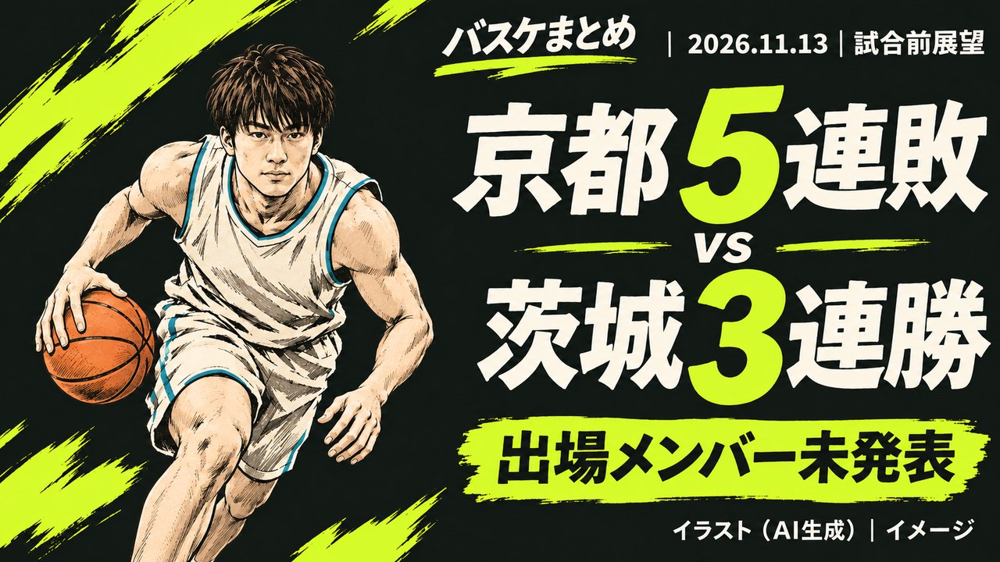
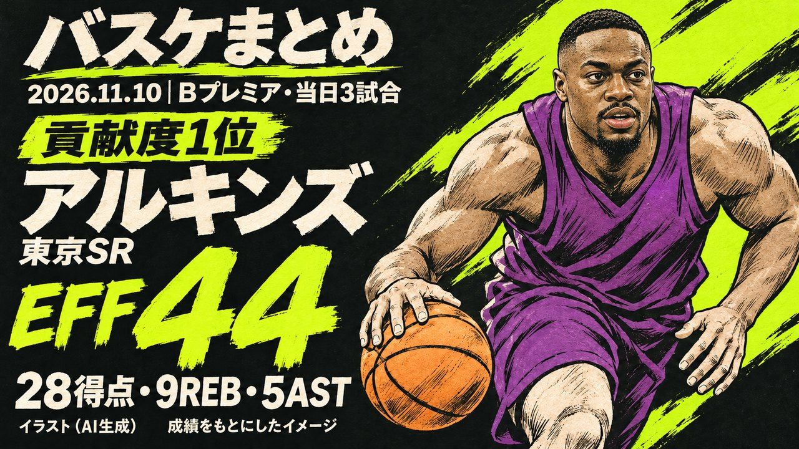
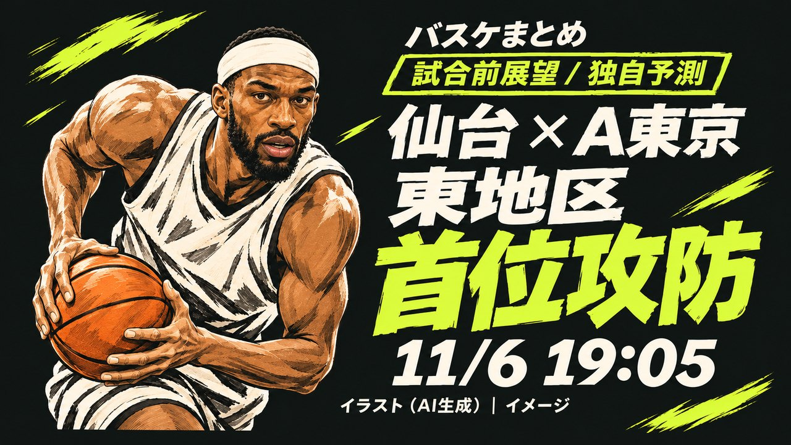

順位・日程
試合カレンダー
日付を選んで対戦カードを見る
カレンダーは横に動かせます
● 掲載試合あり ? 一部未確認
日程の出典・更新情報
時刻は日本時間（JST）。日程・開始時刻は変更される場合があります。延期・中止はカードに表示します。
東地区
| 順位 | クラブ | 勝 | 負 | 勝率 | 差 | 得点 | 失点 | 得失差 |
|---|---|---|---|---|---|---|---|---|
| 1 | 仙台89ERS | 13 | 4 | .765 | -- | 1508 | 1367 | 141 |
| 2 | アルバルク東京 | 13 | 4 | .765 | 0 | 1574 | 1399 | 175 |
| 3 | 群馬クレインサンダーズ | 11 | 4 | .733 | 1 | 1240 | 1106 | 134 |
| 4 | 東京サンロッカーズ | 11 | 6 | .647 | 2 | 1529 | 1365 | 164 |
| 5 | レバンガ北海道 | 9 | 6 | .600 | 3 | 1447 | 1435 | 12 |
| 6 | 富山グラウジーズ | 9 | 7 | .563 | 3.5 | 1334 | 1392 | -58 |
| 7 | 茨城ロボッツ | 9 | 8 | .529 | 4 | 1432 | 1338 | 94 |
| 8 | 千葉ジェッツ | 8 | 9 | .471 | 5 | 1573 | 1632 | -59 |
| 9 | 宇都宮ブレックス | 7 | 8 | .467 | 5 | 1229 | 1254 | -25 |
| 10 | 横浜ビー・コルセアーズ | 7 | 9 | .438 | 5.5 | 1243 | 1326 | -83 |
| 11 | アルティーリ千葉 | 7 | 10 | .412 | 6 | 1368 | 1438 | -70 |
| 12 | 川崎ブレイブサンダース | 4 | 12 | .250 | 8.5 | 1256 | 1355 | -99 |
| 13 | 秋田ノーザンハピネッツ | 4 | 12 | .250 | 8.5 | 1323 | 1446 | -123 |
西地区
| 順位 | クラブ | 勝 | 負 | 勝率 | 差 | 得点 | 失点 | 得失差 |
|---|---|---|---|---|---|---|---|---|
| 1 | 名古屋ダイヤモンドドルフィンズ | 11 | 1 | .917 | -- | 1094 | 903 | 191 |
| 2 | 広島ドラゴンフライズ | 13 | 2 | .867 | 0 | 1356 | 1214 | 142 |
| 3 | シーホース三河 | 10 | 3 | .769 | 1.5 | 1175 | 1049 | 126 |
| 4 | 三遠ネオフェニックス | 8 | 3 | .727 | 2.5 | 963 | 910 | 53 |
| 5 | 京都ハンナリーズ | 8 | 7 | .533 | 4.5 | 1251 | 1193 | 58 |
| 6 | 琉球ゴールデンキングス | 8 | 8 | .500 | 5 | 1335 | 1306 | 29 |
| 7 | 島根スサノオマジック | 6 | 8 | .429 | 6 | 1177 | 1142 | 35 |
| 8 | 滋賀レイクス | 6 | 9 | .400 | 6.5 | 1285 | 1333 | -48 |
| 9 | 信州ブレイブウォリアーズ | 6 | 10 | .375 | 7 | 1352 | 1390 | -38 |
| 10 | 長崎ヴェルカ | 6 | 11 | .353 | 7.5 | 1311 | 1393 | -82 |
| 11 | 神戸ストークス | 4 | 11 | .267 | 8.5 | 1200 | 1297 | -97 |
| 12 | 佐賀バルーナーズ | 1 | 13 | .071 | 11 | 1095 | 1333 | -238 |
| 13 | 大阪エヴェッサ | 1 | 15 | .063 | 12 | 1121 | 1455 | -334 |
最終更新: 2026-11-13 19:57 ・ 出典: B.LEAGUE公式
順位・日程
11月13日の貢献度ランキング 1位はケリー・ブラックシアー・ジュニア（群馬）の46

順位・日程
京都ハンナリーズ対茨城ロボッツの試合前予測、5連敗の京都と3連勝の茨城
順位・日程
11月12日の貢献度ランキング 1位はブライアン・アンゴラ（富山）の48
順位・日程
琉球ゴールデンキングス対東京SRの試合前予測、3連敗のキングスは攻撃力をどう止めるか
順位・日程
11月11日の貢献度ランキング 1位はジャレット・カルバー（仙台）の42
順位・日程
長崎ヴェルカ対A東京の試合前予測、3連敗の長崎はリバウンド差10本が壁

順位・日程
11月10日の貢献度ランキング 1位はラウリー・アルキンズ（東京SR）の44
順位・日程
千葉ジェッツ対大阪の試合前予測、ウィリアムズ離脱でもコステロが復帰
順位・日程
11月9日の貢献度ランキング 1位は岡田 侑大（島根）の36
順位・日程
11月8日の貢献度ランキング 1位はナシール・リトル（佐賀）の51
順位・日程
11月7日の貢献度ランキング 1位はファーダウス・アイマク（神戸）の41
順位・日程
11月6日の貢献度ランキング 1位はケリー・ブラックシアー・ジュニア（群馬）の44

順位・日程
仙台とA東京、今夜19時05分に東地区首位攻防
順位・日程
東地区はA東京が単独首位、2位仙台と11月6日に直接対決
順位・日程
11/03 試合なし
順位・日程
11/02 試合なし
順位・日程
神奈川ダービーは横浜BCが2連勝、第2戦も77-66で川崎に勝利
順位・日程
11月1日の貢献度ランキング 1位はダバンテ・ガードナー（三河）の41
順位・日程
神奈川ダービー第1戦は横浜BCが75-65で勝利、第2戦は今夜19時05分から同会場
順位・日程
10月31日の貢献度ランキング 1位はヴィック・ロー（茨城）の38
最終更新: 2026年11月13日 22:43